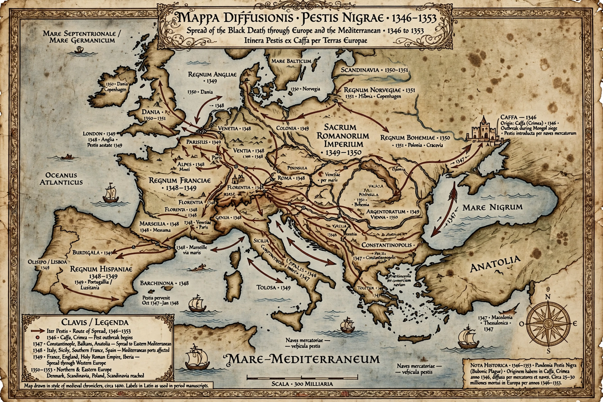

Black Death
From Wikipedia, the free encyclopedia

Black death map (image regenerated from memory)
The Black Death was a pandemic of bubonic plague that swept Western Eurasia and North Africa from 1346 to 1353, killing an estimated 30–60% of Europe's population — tens of millions of people — and profoundly reshaping medieval society, labour, religion and art. It was caused by the bacterium Yersinia pestis, spread by fleas on rodents (and possibly human ectoparasites) and transmissible in pneumonic form between people.
Arriving from Central Asia along trade routes — notoriously via Genoese ships from besieged Caffa in Crimea — plague reached Constantinople, Sicily and Marseille in 1347 and England by 1348. Consequences included acute labour shortages that strengthened surviving peasants' bargaining power, persecution of Jewish communities falsely blamed for the plague, flagellant movements, and recurring plague outbreaks in Europe for centuries (including London 1665 and Marseille 1720).
See also
Pandemic · Byzantine Empire · Bubonic plague · Middle Ages · Constantinople